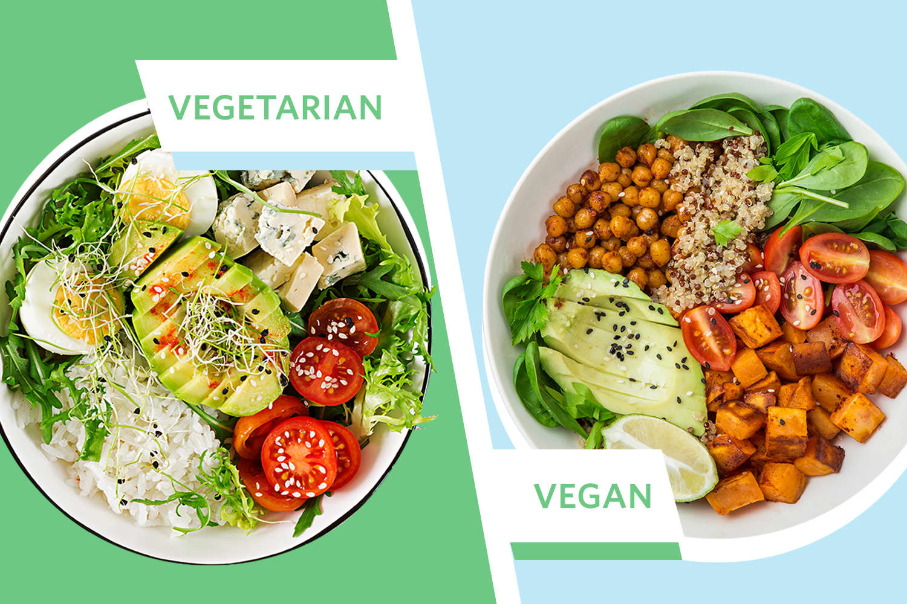

Eating the right stuff
- Calorie count: 2000 For Women 2500 for Men (depending on your fitness aims you can adjust this so if you desire to gain mass you can obviously increase your calorie count or desire to burn fat then decrease).
- 5 Fruit/Veg Per Day (Or even more, I try for 8!).
- Drinking at least 4-5 litres of water a day.
- Multivitamin tablets (A great way of providing your body with the minerals and nutrients it needs. Especially a must for people who suffer from a weak immune system).
- Omega 3 tablets (Help with heart health. Not essential but beneficial).
You may even want to try a Vegan/Vegetarian Diet maybe just for a week to see how you find it. There's many health benefits from these diets including lower blood sugar, improved kidney function and even a reduced risk of coronary heart disease and high blood pressure.
